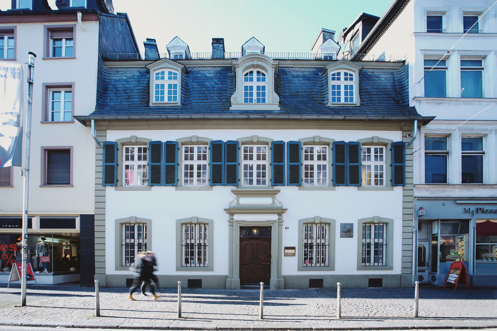
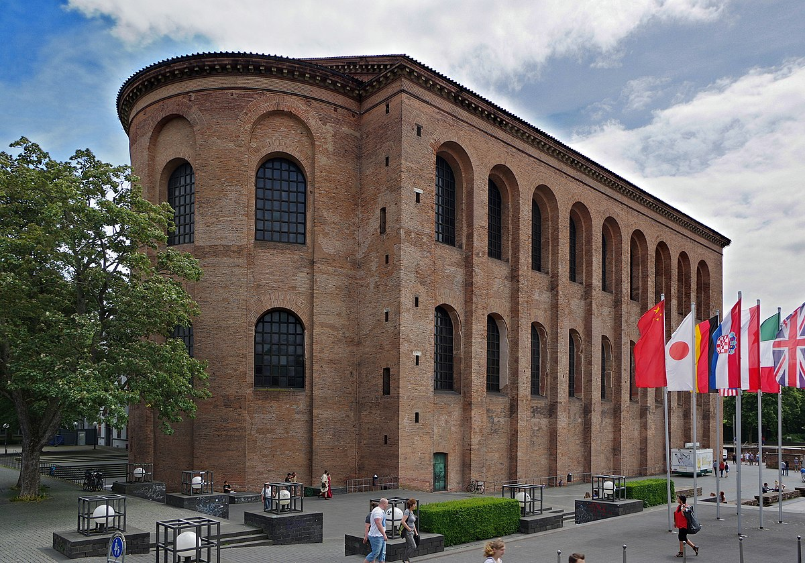
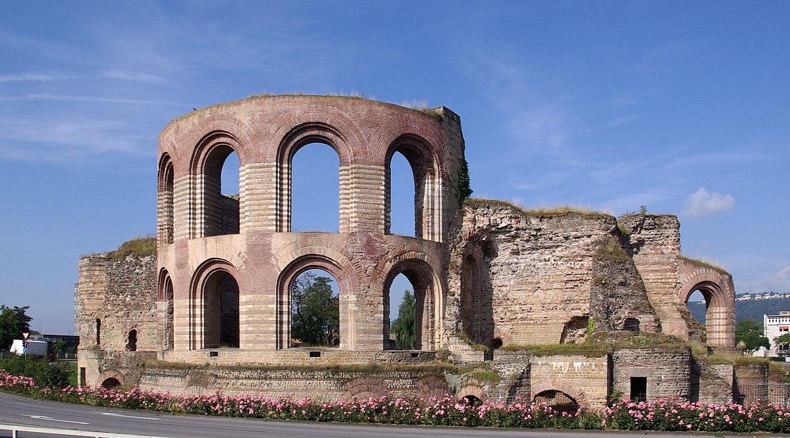
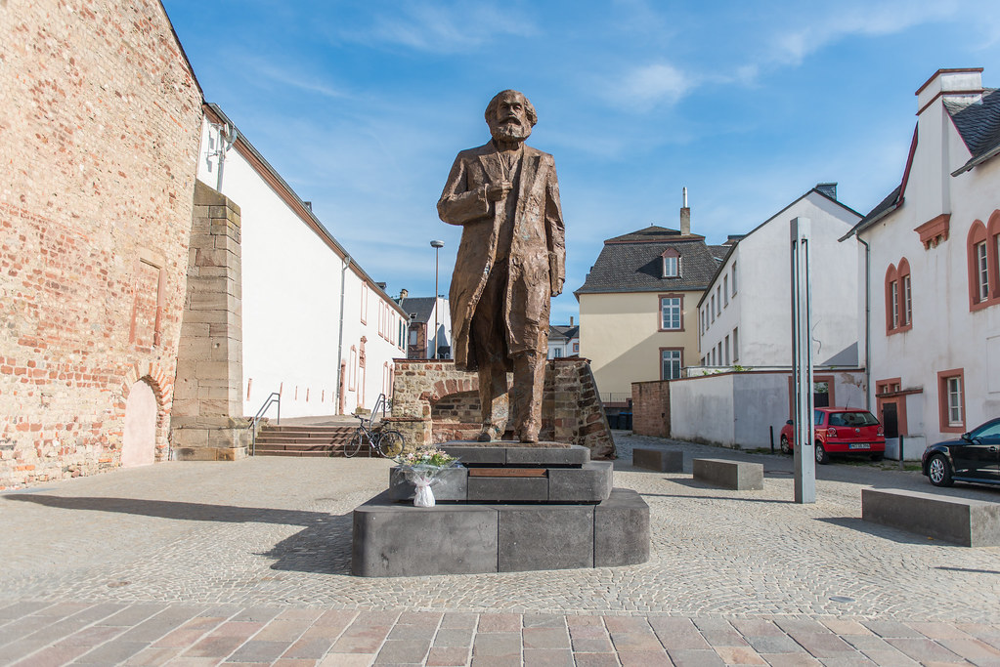
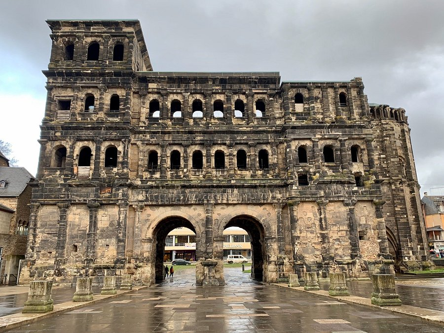
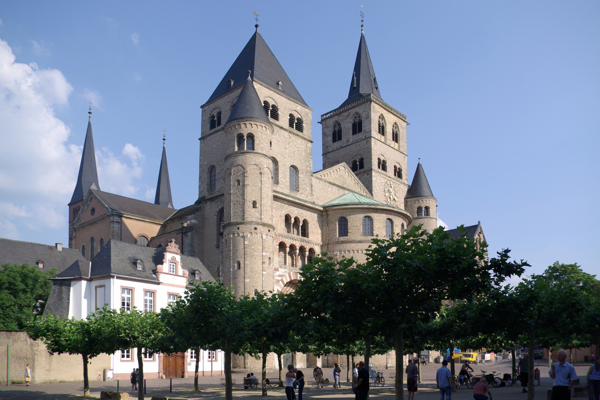

Hem
Galleri
Historia
Bokning
Kulturarv

Karl Marx haus

Basilikan i trier.

Kejsarbaden i trier.

En staty av Karl Marx, donerad av Kina till hans 200 årsdag.

Porta nigra i trier

Triers domkyrka av St. Peter